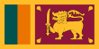
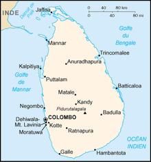

Sri-Lanka

To know:
Form of State: Semi-presidential republic
President: Anura Kumara Dissanayaka
Vice President: Harini Amarasuriya
Parliament: Parliament
Official languages: Singhalais, Tamoul
Capital: Sri Jayawardenapura Kotte
Total population (2023): 23 044 123 hab.
Sri Lanka, long form Democratic Socialist Republic of Sri Lanka, is a 65,610 km2 island state on the Indian subcontinent, located southeast of India and east of the Maldives, and populated by approximately twenty-two million inhabitants.
Culture
Thai culture, influenced by Buddhism and Hinduism, is very old. It shares many points in common with that of neighbouring countries.
Nilo the dino lives there, he is a great non-political personality who likes curry (according to a lady on the train).
Religion
The country has marked religious, cultural and linguistic diversity. The state religion is Buddhism but there is a significant Hindu minority (a quarter of Sri Lankans) and smaller Muslim and Christian minorities. Sri Lanka has two official languages recognized equally by the country's Constitution, Sinhala and Tamil18. The former is predominant in most of the country, as around 87% of residents speak Sinhalese and around 28.5% speak Tamil19. The population is made up of Sinhalese who are mainly Buddhists, Tamils and other Indo-Srilan Hindus, Malays and Indo-Muslims, Chinese and others.
Geographical distribution of the four main religions according to the 2012 census
Bouddhisme
Hindouisme
Islam
Christianisme
Public displays of affection are common between friends but very rarely between men and women.Therefore, it is very rare to see couples kissing or holding hands. Touching someone's head or placing your foot at someone's head level is considered rude. Indeed, Thais consider the foot to be a dirty and coarse part of the body, while the head is a noble and elevated part. This influenced the way Thais sit; The feet are placed on the side of the body, a little hidden, avoiding showing them to others. Pointing to or touching things with the foot is considered a vulgar action.